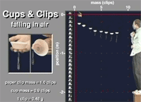

This video shows a set of cupcake cups dropped from rest. The cups have paper clips attached to give them mass and stability. You will use the video to explore the nature of the air resistance force on the cups.
